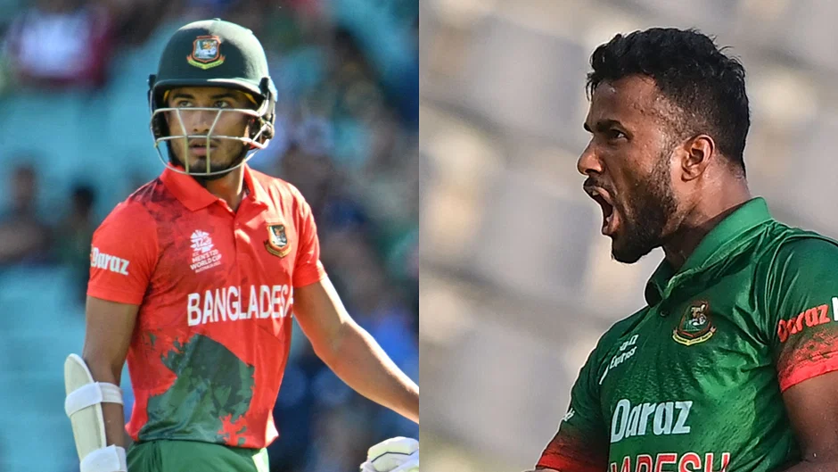
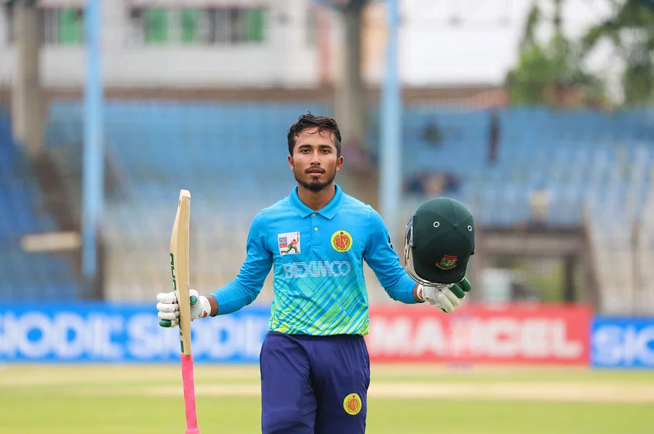

Monday, 19 June 2023

Cricket
Afif, Ebadot return to T20 squad for Afghan series
Staff Correspondent Dhaka
Published: 18 Jun 2023, 18: 27

Afif Hossain and Ebadot Hossain returned to the Twenty20 side as Bangladesh Cricket Board (BCB) announced a 15-member squad for the two-match series against Afghanistan next month.
Afif, who was dropped from the T20 squad for the Ireland series, comes back in place of uncapped wicketkeeper-batter Jaker Ali.
Afif Hossain and Ebadot Hossain returned to the Twenty20 side as Bangladesh Cricket Board (BCB) announced a 15-member squad for the two-match series against Afghanistan next month.
Afif, who was dropped from the T20 squad for the Ireland series, comes back in place of uncapped wicketkeeper-batter Jaker Ali.

Ebadot, who last played a T20 for Bangladesh at the 2022 ICC T20 World Cup, returns to the squad on the back of consistent performances in ODIs for the Tigers
The two T20s will be played on 14 and 16 July respectively at the Sylhet International Cricket Stadium.
Before the T20 series, the two teams will face off in a three-match ODI series in Chattogram, which will conclude on 11 July.
Bangladesh T20 squad: Shakib Al Hasan (c), Liton Das, Rony Talukdar, Najmul Hossain Shanto, Towhid Hridoy, Shamim Hossain, Mehidy Hasan Miraz, Nasum Ahmed, Mustafizur Rahman, Hasan Mahmud, Taskin Ahmed, Ebadot Hossain, Shoriful Islam, Rishad Hossain, Afif Hossain
Read more from Cricket